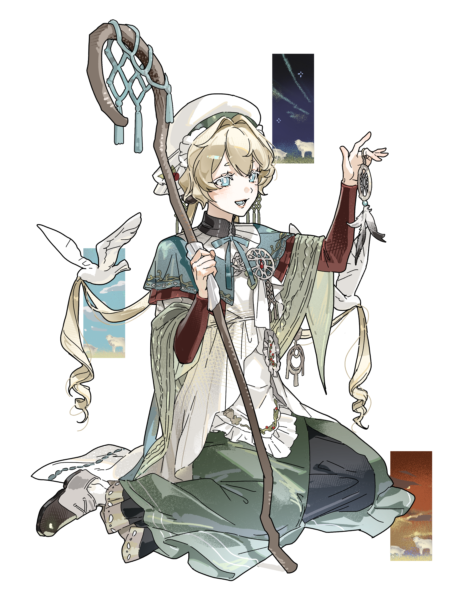

BITTER
비터
CHARACTER 01
角色名字 A Sub Name
這裡可以打上關於角色 A 的故事背景、個性設定、或者是他背後的一些小彩蛋。字數不管是長是短，都會完美碰邊自動換行，完全不用擔心畫面歪掉。

CHARACTER 02
角色名字 B Sub Name
這裡可以詳細記錄角色 B 的特徵！因為這頁特地解放成了左右並排的雙欄式版面，畫面會顯得非常乾淨大氣，很適合放孩子們的個人檔案。